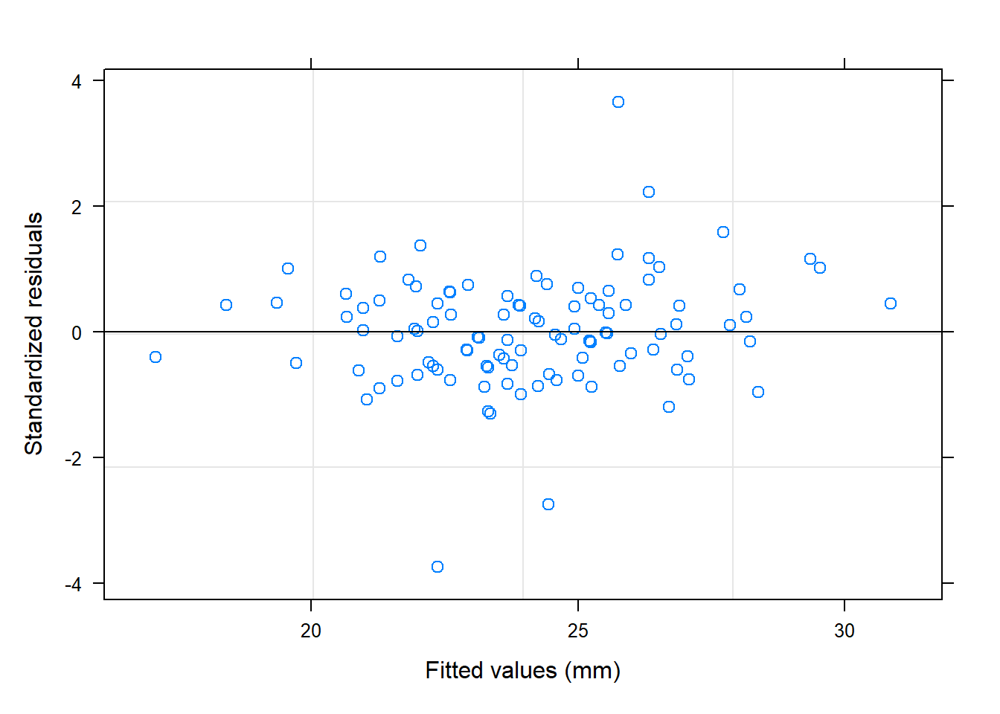

8 Algorithms
In statistics and machine learning, algorithms provide the computational machinery that turns probability models into concrete numerical estimates.
This chapter focuses on three closely related ideas:
- Maximum likelihood estimation (MLE) as a unifying estimation principle,
- Gradient-based optimization as a general-purpose numerical algorithm, and
- The connection between likelihood, optimization, and uncertainty quantification.
The emphasis here is not on deriving every formula from scratch, but on understanding how the mathematics, statistical interpretation, and R implementations fit together.
8.1 Maximum likelihood estimation
8.1.1 Likelihood estimation
(without random effects)
Suppose we observe \(n\) independent observations \(y_1,\ldots,y_n\), and we assume that the data are generated from a normal distribution with mean \(\mu\) and variance \(\sigma^2\).
The likelihood function is the joint density of the observed data, viewed as a function of the unknown parameters.
For independent normal observations:
\[ L\left(\left(y_{1}, \ldots, y_{n}\right), \mu, \sigma^{2}\right) =\prod_{i=1}^{n} \frac{1}{\sqrt{2 \pi \sigma^{2}}} \exp\left(-\frac{(y_i-\mu)^2}{2\sigma^2}\right). \]
Rather than maximizing \(L\) directly, we almost always work with the log-likelihood, because:
- products become sums,
- numerical stability improves,
- derivatives are easier to compute.
In practice, optimization routines typically minimize the negative log-likelihood:
\[ \ell = -\log L. \]
8.1.2 Negative log-likelihood (scalar form)
Taking the logarithm and multiplying by \(-1\) gives:
\[ \begin{aligned} \ell\left(\left(y_{1}, \ldots, y_{n}\right), \mu, \sigma^{2}\right) &= -\log\left[ \prod_{i=1}^{n} \frac{1}{\sqrt{2 \pi \sigma^{2}}} \exp\left(-\frac{(y_i-\mu)^2}{2\sigma^2}\right) \right] \\ &= -\sum_{i=1}^{n} \left[ \log\left(\frac{1}{\sqrt{2 \pi \sigma^{2}}}\right) -\frac{(y_i-\mu)^2}{2\sigma^2} \right]. \end{aligned} \]
This expression makes two things explicit:
- One part depends only on \(\sigma^2\) (the normalization constant).
- The other part depends on squared deviations \((y_i-\mu)^2\).
8.1.3 Matrix formulation
The same likelihood can be written compactly using linear algebra.
Let:
- \(\mathbf{y}\) be the \(n\times 1\) response vector,
- \(\mathbf{X}\) be the design matrix,
- \(\beta\) be the vector of regression coefficients,
- \(\mathbf{I}\) be the identity matrix.
Assuming independent errors with variance \(\sigma^2\), the covariance matrix is \(\sigma^2\mathbf{I}\).
The negative log-likelihood becomes:
\[ \begin{aligned} \ell(\mathbf{y}, \beta, \gamma) &=\frac{1}{2}\left\{ n \log (2 \pi) +\log \left|\sigma^{2} \mathbf{I}\right| +(\mathbf{y}-\mathbf{X} \beta)^{\prime} (\sigma^{2} \mathbf{I})^{-1} (\mathbf{y}-\mathbf{X} \beta) \right\} \\ &=\frac{1}{2}\left\{ n \log (2 \pi) +n \log (\sigma^{2}) +(\mathbf{y}-\mathbf{X}\beta)^{\prime} (\mathbf{y}-\mathbf{X}\beta)/\sigma^{2} \right\}. \end{aligned} \]
Here, \(\gamma\) denotes variance-related parameters, derived from \(\sigma^2\mathbf{I}\).
This form highlights an important idea:
Ordinary least squares is maximum likelihood estimation under normal errors.
8.1.4 Minimizing the negative log-likelihood
MLE finds parameter values that minimize \(\ell\):
\[ \arg\min \; \ell(\mathbf{y}, \beta, \gamma). \]
For the simple normal model with parameters \((\mu,\sigma^2)\), we can solve this analytically by taking derivatives.
8.1.5 Taking derivatives
Derivative with respect to \(\mu\):
\[ \begin{aligned} \frac{\partial \ell(\mu, \sigma^{2})}{\partial \mu} &=\frac{1}{2}\sum_{i=1}^{n}(-2)(y_i-\mu)/\sigma^2 \\ &=(n\mu-\sum_{i=1}^{n}y_i)/\sigma^2. \end{aligned} \]
Setting this equal to zero yields:
\[ \hat{\mu}=\bar{y}. \]
Derivative with respect to \(\sigma^2\):
\[ \frac{\partial \ell(\mu, \sigma^{2})}{\partial \sigma^{2}} =\frac{1}{2}\left[ \frac{n}{\sigma^{2}} -\frac{\sum_{i=1}^{n}(y_i-\mu)^2}{(\sigma^{2})^2} \right]. \]
Solving gives:
\[ \hat{\sigma}^{2} =\frac{1}{n}\sum_{i=1}^{n}(y_i-\bar{y})^2. \]
This is the MLE of the variance, which divides by \(n\) rather than \(n-1\).
8.1.6 REML versus ML
Under restricted maximum likelihood (REML), the variance estimator adjusts for the estimation of the mean:
\[ \hat{\sigma}^{2}_{\text{REML}} =\frac{1}{n-1}\sum_{i=1}^{n}(y_i-\bar{y})^2. \]
Conceptually:
- ML treats \(\mu\) as fixed but unknown.
- REML accounts for the loss of one degree of freedom when estimating \(\mu\).
This distinction becomes crucial in linear mixed models, where REML is often preferred for variance components.
8.2 R demonstration
8.2.1 Toy data
We simulate data from a linear regression model with normal errors.
set.seed(123)
n <- 20000
x <- rnorm(n, 2, sqrt(2))
s <- rnorm(n, 0, 0.8)
y <- 1.5+x*3+s
mydata <- data.frame(y,x)8.2.2 Linear regression (closed-form MLE)
For normal errors, the MLE of regression coefficients coincides with ordinary least squares.
## (Intercept) x
## 1.487701 3.003695## [1] 0.6397411Interpretation:
coefficients(lmfit)estimates \(\beta\).(summary(lmfit)$sigma)^2is the estimated variance of the errors.
8.2.3 MLE via explicit negative log-likelihood
We now code the negative log-likelihood directly using matrix notation.
minusloglik <- function(param){
beta <- param[-1] # regression coefficients
sigma <- param[1] # variance
y <- as.vector(mydata$y)
x <- cbind(1, mydata$x)
mu <- x %*% beta
0.5 * (n*log(2*pi) + n*log(sigma) + sum((y-mu)^2)/sigma)
}This function implements exactly the mathematical expression derived earlier.
Optimizing it numerically:
## [1] 0.6397201 1.4876186 3.0038675The results agree with lm(), confirming that linear regression is an MLE problem.
8.2.4 Maximum likelihood via maxLik
The maxLik package directly maximizes the log-likelihood.
library(maxLik)
ols.lf <- function(param) {
beta <- param[-1]
sigma <- param[1]
y <- as.vector(mydata$y)
x <- cbind(1, mydata$x)
mu <- x %*% beta
sum(dnorm(y, mu, sqrt(sigma), log = TRUE))
}
mle_ols <- maxLik(logLik = ols.lf,
start = c(sigma = 1, beta1 = 1, beta2 = 1))
summary(mle_ols)## --------------------------------------------
## Maximum Likelihood estimation
## Newton-Raphson maximisation, 11 iterations
## Return code 8: successive function values within relative tolerance limit (reltol)
## Log-Likelihood: -23910.85
## 3 free parameters
## Estimates:
## Estimate Std. error t value Pr(> t)
## sigma 0.639677 0.006396 100.0 <2e-16 ***
## beta1 1.487701 0.009768 152.3 <2e-16 ***
## beta2 3.003695 0.003999 751.2 <2e-16 ***
## ---
## Signif. codes: 0 '***' 0.001 '**' 0.01 '*' 0.05 '.' 0.1 ' ' 1
## --------------------------------------------This approach generalizes easily to models where no closed-form solution exists.
8.2.5 Another example (real data)
We repeat the procedure for mtcars.
ols.lf <- function(param) {
beta <- param[-1]
sigma <- param[1]
y <- as.vector(mtcars$mpg)
x <- cbind(1, mtcars$cyl, mtcars$disp)
mu <- x %*% beta
sum(dnorm(y, mu, sqrt(sigma), log = TRUE))
}
mle_ols <- maxLik(logLik = ols.lf,
start = c(sigma = 1, beta1 = 1, beta2 = 1, beta3 = 1))
summary(mle_ols)## --------------------------------------------
## Maximum Likelihood estimation
## Newton-Raphson maximisation, 25 iterations
## Return code 2: successive function values within tolerance limit (tol)
## Log-Likelihood: -79.57282
## 4 free parameters
## Estimates:
## Estimate Std. error t value Pr(> t)
## sigma 8.460638 2.165929 3.906 0.0000937 ***
## beta1 34.660993 2.450186 14.146 < 2e-16 ***
## beta2 -1.587276 0.683895 -2.321 0.0203 *
## beta3 -0.020584 0.009815 -2.097 0.0360 *
## ---
## Signif. codes: 0 '***' 0.001 '**' 0.01 '*' 0.05 '.' 0.1 ' ' 1
## --------------------------------------------##
## Call:
## lm(formula = mpg ~ cyl + disp, data = mtcars)
##
## Coefficients:
## (Intercept) cyl disp
## 34.66099 -1.58728 -0.02058## [1] 9.335872Again, MLE and OLS agree under normal error assumptions.
8.3 Confidence intervals from likelihood
Most classical confidence intervals rely on the asymptotic normality of MLEs:
\[ \hat{\theta}_i \pm z_{1-\alpha/2}\, SE(\hat{\theta}_i). \]
The standard error is derived from the Hessian matrix (second derivative of the log-likelihood), also called the observed Fisher information.
8.3.1 Fisher information and Hessian
For a parameter vector \(\theta\):
\[ I(\theta)=\ell''(\theta). \]
The covariance matrix of \(\hat{\theta}\) is approximated by:
\[ I(\hat{\theta})^{-1}. \]
For the normal model with parameters \((\mu,\sigma^2)\), the Hessian is diagonal:
\[ \frac{\partial^2 \ell}{\partial \mu^2}=\frac{n}{\sigma^2}, \quad \frac{\partial^2 \ell}{\partial (\sigma^2)^2} =\frac{n}{2(\sigma^2)^2}, \quad \frac{\partial^2 \ell}{\partial \mu\,\partial\sigma^2}=0. \]
Thus:
\[ SE_{\hat{\mu}}=\sqrt{\frac{\hat{\sigma}^2}{n}}, \quad SE_{\hat{\sigma}^2}=\hat{\sigma}^2\sqrt{\frac{2}{n}}. \]
The corresponding Wald intervals follow immediately.
8.3.2 Likelihood ratio confidence intervals
Wald intervals can perform poorly in small samples.
A likelihood-based alternative defines the confidence set as:
\[ \left\{ \theta \;\middle|\; \frac{L(\theta)}{L(\hat{\theta})}>\exp(-3.84/2) \right\}, \]
where \(3.84\) is the 95% cutoff from a \(\chi^2_1\) distribution.
This approach often has better finite-sample behavior.
8.3.3 Profile likelihood
The profile likelihood fixes one parameter and maximizes over the others.
For example, profiling \(\mu\):
\[ L_p(\mu)=L\left(\mu,\frac{1}{n}\sum_{i=1}^{n}(y_i-\mu)^2\right). \]
Similarly, profiling \(\sigma^2\):
\[ L_p(\sigma^2)=L(\bar{y},\sigma^2). \]
Profile likelihoods are widely used for confidence intervals in mixed models and survival analysis.
8.4 Maximum likelihood estimate practice
The following example revisits MLE numerically, reinforcing the connection between theory and optimization.
sample<-c(1.38, 3.96, -0.16, 8.12, 6.30, 2.61, -1.35, 0.03, 3.94, 1.11)
n<-length(sample)
muhat<-mean(sample)
sigsqhat<-sum((sample-muhat)^2)/n
muhat## [1] 2.594## [1] 8.133884loglike<-function(theta){
a<--n/2*log(2*pi)-n/2*log(theta[2])-
sum((sample-theta[1])^2)/(2*theta[2])
return(-a)
}
optim(c(2,2),loglike,method="BFGS")$par## [1] 2.593942 8.1303408.5 Gradient descent
While MLE provides the objective function, gradient descent is a general optimization algorithm used to find minima numerically.
8.5.1 Linear regression example
##
## Call:
## lm(formula = hwy ~ cty, data = mpg)
##
## Residuals:
## Min 1Q Median 3Q Max
## -5.3408 -1.2790 0.0214 1.0338 4.0461
##
## Coefficients:
## Estimate Std. Error t value Pr(>|t|)
## (Intercept) 0.89204 0.46895 1.902 0.0584 .
## cty 1.33746 0.02697 49.585 <2e-16 ***
## ---
## Signif. codes: 0 '***' 0.001 '**' 0.01 '*' 0.05 '.' 0.1 ' ' 1
##
## Residual standard error: 1.752 on 232 degrees of freedom
## Multiple R-squared: 0.9138, Adjusted R-squared: 0.9134
## F-statistic: 2459 on 1 and 232 DF, p-value: < 2.2e-168.5.2 Cost function and gradient descent
We define the squared-error cost:
\[ J(\theta)=\frac{1}{2n}\sum_{i=1}^n (X_i\theta-y_i)^2. \]
Gradient descent iteratively updates parameters in the direction of the negative gradient.
alpha <- 0.005
num_iters <- 20000
theta <- matrix(c(0,0), nrow=2)
x <- mpg$cty
y <- mpg$hwy
X <- cbind(1, matrix(x))
cost_history <- double(num_iters)
for (i in 1:num_iters) {
error <- (X %*% theta - y)
delta <- t(X) %*% error / length(y)
theta <- theta - alpha * delta
cost_history[i] <- cost(X, y, theta)
}
theta| 0.8899161 |
| 1.3375742 |
## [1] 1.522137 1.522137 1.522137 1.522137 1.522137 1.5221378.5.3 Cost function convergence
plot(cost_history, type='line', col='red',
lwd=2, main='Cost function',
ylab='cost', xlab='Iterations')## Warning in plot.xy(xy, type, ...): plot type 'line' will be truncated to first
## character
This plot illustrates:
- monotone decrease of the objective,
- convergence toward the OLS solution.
8.5.4 Comparing gradient descent and linear regression
x <- mpg$cty
yhat <- mpg$cty*theta[2] + theta[1]
plot(x,yhat, main='Linear regression by gradient descent')
abline(lm(mpg$hwy ~ mpg$cty), col="blue", lwd=4)
abline(res, col='red')
The fitted line from gradient descent coincides with the closed-form OLS solution.
Broader context
- MCMC extends likelihood-based inference when direct optimization is infeasible.
- EM algorithms handle latent variables by alternating expectation and maximization steps.
- Pooling rules combine estimates across multiple datasets (e.g., multiple imputation).
- Bootstrapping replaces analytic sampling distributions with resampling-based approximations.
Together, these algorithms form the computational backbone of modern statistical practice.
The key takeaway is:
Probability defines the model, likelihood defines the objective, and algorithms deliver the estimates.